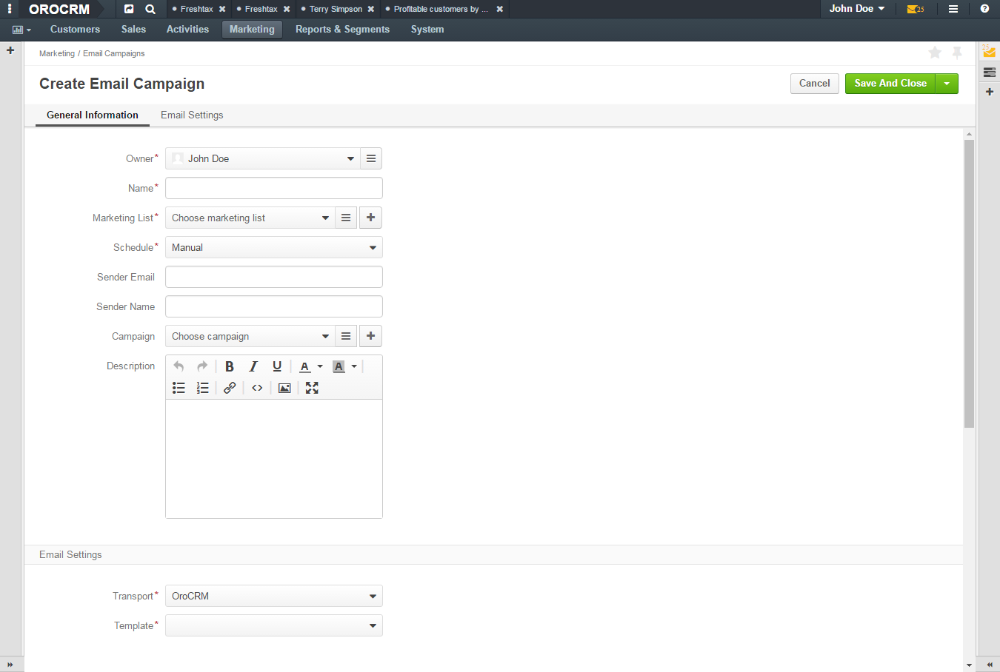
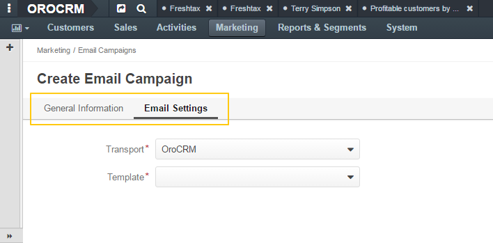
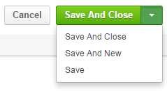

In order to create a new record of an entity or to update details of the existing record, use the dedicated Create <Entity name> and Edit <Entity name> pages.
On the All <Entity name> page (the page with the list of all entity records), click Create <Entity name> on the top right. The Create <Entity name> page opens.
Note
The default list of fields available on the page can be modified by an administrator.
Fill in all the required information.
Note that mandatory fields are identified with the red asterisk.
Available fields are usually gathered into logical sections. Click the section name to scroll the page to the fields that belong to this section.
Save the new record or discard it.
To save the record, click one of the options in the save menu on the top right:
To discard the changes, click the Cancel button in the upper-right corner of the page.
To change the properties of a record, use the Create <Entity name> page.
Do one of the following:
Modify records and save the changes as described in step 2–3 of the Create a Record section.
Note
Some of the fields labels cannot be changed after the record is created, subject to the system requirements.